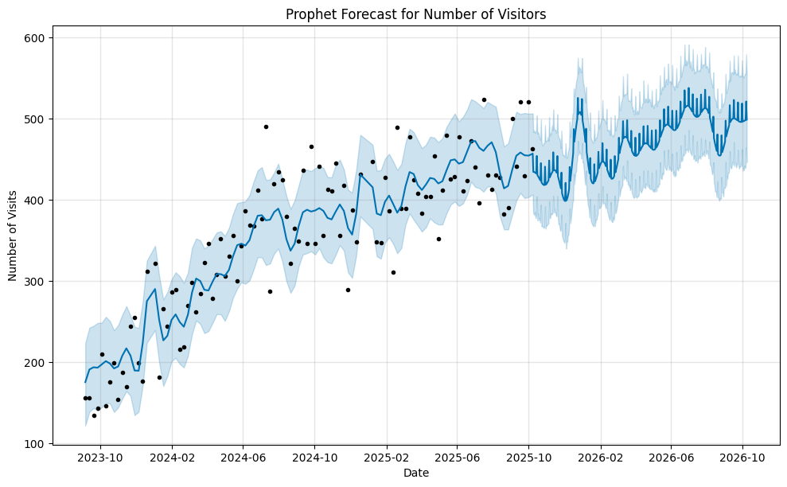
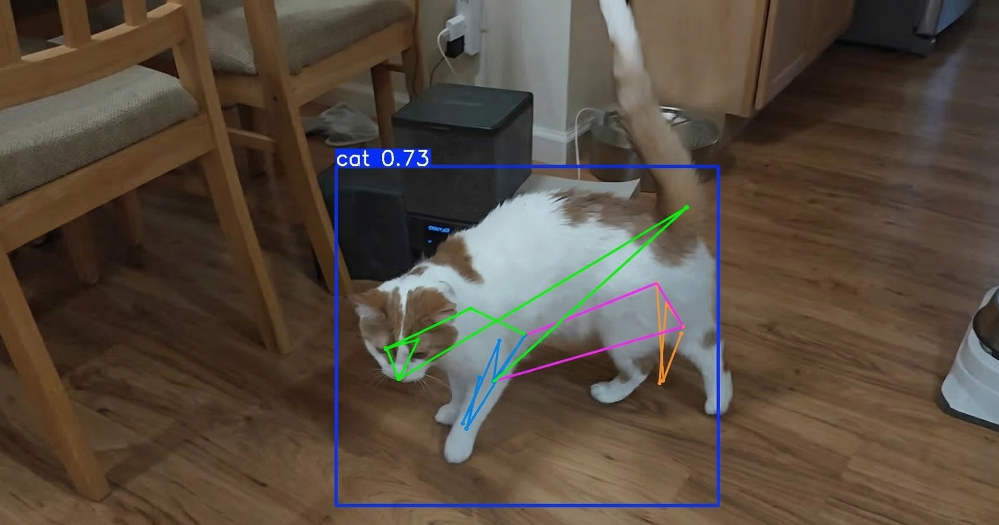
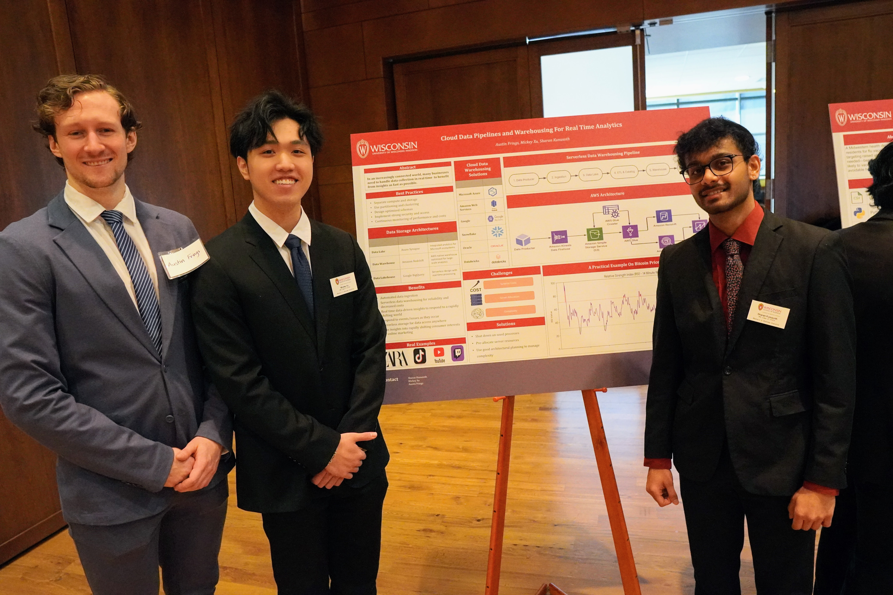

Hi, I'm Austin Frings
I am a detail-oriented Data Analyst with a passion for transforming raw data into meaningful stories. I am pursuing a Master's in Business Analytics with a background in Computer Science. I specialize in building predictive models, automating ETL pipelines, and delivering insights that drive strategy.
When I'm not cleaning messy datasets or tuning hyperparameters, you can find me cycling with my friends, designing something to make with my 3D printer, or experimenting with the latest AI tools.
My Interests
Technologies and tools I use to analyze and model data.
Languages
- Python
- SQL
- JavaScript
Machine Learning
- Computer Vision
- Generative AI
- Statistical Analysis
Tools & Visualization
- Tableau / PowerBI
- Pandas & NumPy
- Git & GitHub
Featured Projects
A selection of my recent data analysis and predictive modeling work.

Food Pantry Demand Forecasting
Analyzed patron visit data from a local food pantry. Utilized Prophet to build a time series forecasting model, predicting future visitation trends to assist with inventory planning and operations.

WIP: YOLOv8 Fine-Tuning For Cat Pose Estimation
This project adapts a fast, lightweight tracking model (YOLOv8 Nano), originally designed for human poses, to identify and track a 17-point skeleton on cats. The model is optimized to process video in real-time on low-power edge devices.
[Project 3 Title]
A brief description of the project. E.g. Interactive dashboard analyzing regional sales performance and customer churn demographics.

Let's Connect
I transform complex data into actionable insights through Machine Learning, Statistical Analysis, and clear Visualization.
I'm currently looking for new opportunities. Whether you have a question or just want to say hi, my inbox is open!